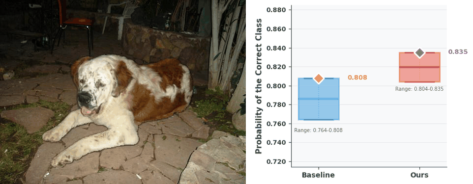
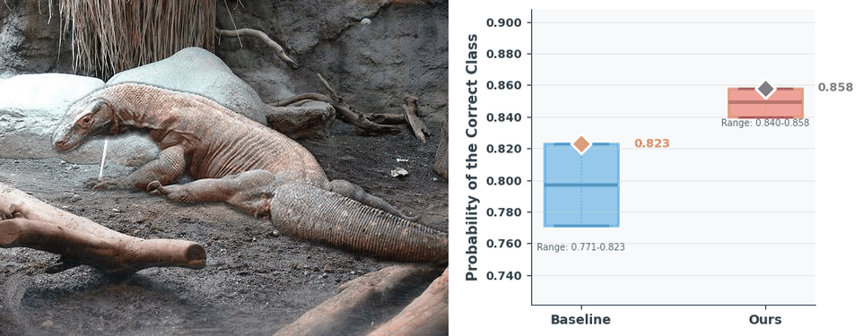

Local Scale Equivariance with Latent Deep Equilibrium Canonicalizer
Md Ashiqur Rahman1, Chiao-An Yang1, Michael N. Cheng1, Lim Jun Hao2, Jeremiah Jiang2, Teck-Yian Lim2, Raymond A. Yeh1
1 Purdue University 2 DSO National Laboratories
Global vs. Local Scaling
🌍 Global Scaling
Uniformly resizes the entire image . Widely studied but rarely encountered in isolation.

🎯 Local Scaling
Different objects change size independently. Here only the Haworthia plant changes the size.

Key Contributions
Local Scale Equivariance
We model realistic, spatially-varying scale changes rather than uniform global scaling.
Monotone Scaling Group
We approximate local scaling using invertible monotonic functions that form a transformation group.
Deep Equilibrium Canonicalizer (DEC)
We introduce a novel canonicalizer using deep equilibrium models instead of explicit optimization.
Plug-and-Play Boost
Our method improves scale robustness and accuracy across models with minimal overhead.
Monotone Scaling: A Clean Approximation
1D Intuition: Stretching a Rubber Band
To build an intuition for local scale equivariance, consider a one-dimensional function \( f(x) \) defined on the interval \([0,1]\). Traditionally, global scaling uniformly resizes the entire domain, expressed as:
\( R_a[f](x) = f(a^{-1} x) \)
where \( a \) is a constant scaling factor. This operation applies a uniform stretch or compression across the entire function.
In contrast, to model non-uniform or monotone scale changes, we introduce a strictly increasing and invertible warp function \( l: [0,1] \to [0,1] \). This allows us to define a locally scaled function as:
\( S(f; l)(x) = f(l^{-1}(x)) \)
Conceptually, this is akin to stretching a rubber band: instead of pulling both ends evenly (global scaling), certain segments are stretched or compressed more than others, but the order of points is always preserved. The local rate of stretch or compression at any point \( x \) is given by the derivative \( \frac{dl}{dx} \). This formulation ensures that the transformation is monotonic and invertible, crucial properties for maintaining structural integrity.


2D Extension: Warping an Image Grid
Extending this concept to two-dimensional images \( I(x, y): [0,1]^2 \to \mathbb{R} \), we apply a smooth, invertible spatial warp \( l(x, y) = (l_X(x, y), l_Y(x, y)) \). This warp maps the original image coordinates to new coordinates, defining the locally scaled image as:
\( S(I; l)(x, y) = I(l^{-1}(x, y)) \)
Here, \( l_X \) and \( l_Y \) are strictly increasing functions that independently control the local horizontal and vertical scaling, respectively. The key characteristic of this transformation is that it deforms the image grid smoothly without tearing or folding, thereby preserving the topological order of pixels. This contrasts with rigid global rescaling by allowing different regions of the image to undergo independent scaling, which more accurately reflects realistic viewpoint and depth-based distortions.
Theorem: The set of such 2D monotone maps, characterized by commuting, symmetric positive-definite (SPD) Jacobians, forms a group under composition, satisfying closure (composing two such transformations yields another valid transformation), invertibility (every transformation has an inverse), and possessing an identity element (representing no change). These properties are essential for developing robust equivariant models.
The Jacobian matrix \( J_l(x, y) = \nabla l(x,y) \) quantifies the local scaling and deformation at each point \((x, y)\). For the transformations to form a group, the Jacobians must be symmetric positive-definite (ensuring local invertibility and non-folding) and commute (ensuring that the order of applying transformations does not affect the final outcome). This mathematical rigor underpins the ability to stack multiple such scalings while maintaining validity and invertibility.
Analogy: Visualize an image as an elastic fabric. Monotone scaling is analogous to gently stretching or compressing this fabric in various directions without introducing tears or overlaps. Regardless of how many such smooth, untangling stretches are applied, the fabric's inherent structure remains preserved.


Deep Equilibrium Canonicalizer (DEC)
To achieve local scaling equivariance, our method aims to transform input features into a canonical representation that is invariant to spatial warps. Instead of relying on computationally expensive iterative optimization for each input, we leverage a Deep Equilibrium Model (DEQ) to efficiently find this canonicalizing warp. The DEQ operates by finding a fixed point \( \Phi_k \) of a learned update function:
\( \Phi_k = g_\theta(F_k, \Phi_k) \)
Here, \( F_k \) represents the input feature map, and \( \Phi_k \) is the predicted warp field. This fixed point solution effectively approximates the result of an energy minimization problem: \[ \Phi_k \approx \arg\min_\Phi \mathcal{E}(F_k; \Phi) \] where \( \mathcal{E}(F_k; \Phi) \) is an energy function that quantifies how "non-canonical" the feature map \( F_k \) is under a given warp \( \Phi \). The optimal \( \Phi_k \) thus represents the warp required to bring \( F_k \) into its canonical, scale-normalized frame.
Once the canonicalizing warp \( \Phi_k \) is determined, the network processes the canonicalized feature map \( \hat{F}_k = S^{-1}(F_k; \Phi_k) \). After this processing, \( \Phi_k \) is re-applied to the output features, ensuring that the subsequent layers receive representations that maintain equivariance to local scale changes. This "plug-and-play" approach allows our DEC to be integrated into existing deep learning architectures with minimal overhead, enhancing their robustness to local scale variations.

Qualitative Results


For full quantitative results, see our ICCV 2025 paper.